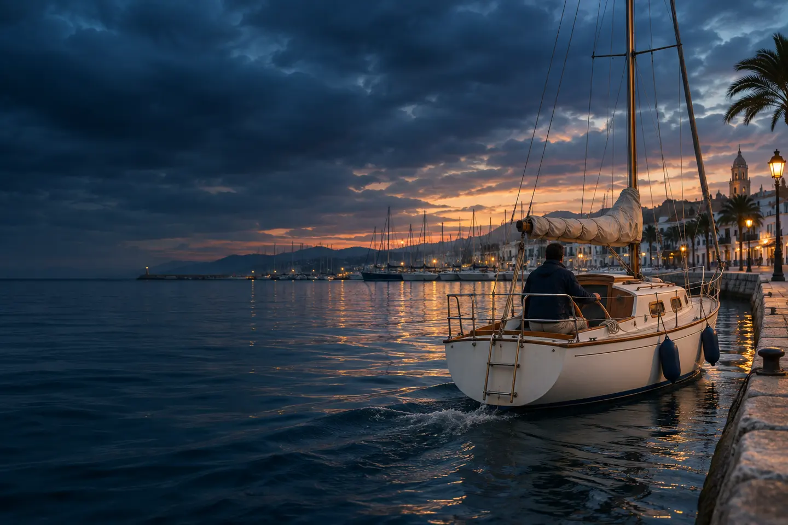

Conoce el barco
Recorre un crucero por niveles, localiza la sentina y los grifos de fondo, o explora cómo gobierna la pala con arrancada.

Un simulador náutico en 3D para practicar atraques, reconocer riesgos de abordaje y entender qué hace el barco cuando tomas el mando.
Catálogo de ejercicios
Cada ejercicio parte de una situación concreta. Puedes reconocer el barco antes de zarpar, ensayar una maniobra en puerto o decidir qué hacer cuando aparece otro buque.
Recorre un crucero por niveles, localiza la sentina y los grifos de fondo, o explora cómo gobierna la pala con arrancada.
Atraca de costado por babor, entra de popa en una plaza de pantalán o practica una aproximación con viento. Prepara las defensas y decide qué cabo dar primero.
Fondea en una cala con brisa, sigue un canal balizado o resuelve una vuelta encontrada en mar abierto. El catálogo también incluye ejercicios en Chipiona.
Patrón Exercises · Arquitectura propuesta
Cada ejercicio se concibe como un paquete editorial versionado. Describe el objetivo, los textos, las fases, los errores, el feedback y los criterios de evaluación. Referencia los recursos multimedia, el barco y el escenario que necesita.
Identificar luces puede requerir un modelo 3D y estados de iluminación. Practicar un fondeo requiere capacidades físicas verificadas para las condiciones y los criterios de ese ejercicio.
El reproductor previsto comprueba versiones y capacidades antes de iniciar la experiencia. Un barco o un escenario se puede reutilizar si encaja con el ejercicio y dispone de autorización para ese uso.
El diseño prevé que Patrón pueda presentar el ejercicio en el momento de aplicar lo aprendido. El resultado sirve como feedback de la actividad en las condiciones simuladas.
Ver el vínculo con la lecciónUn ejercicio por dentro
Un velero de 6 metros, una dársena en calma y un muelle a babor. Desde el puesto de gobierno decides cómo aproximarte y das órdenes a un tripulante para preparar y manejar las amarras.
Puedes ensayar con ayudas y repetir en solitario. Las cámaras permiten mirar desde cubierta o cambiar de perspectiva para entender la posición del casco respecto al muelle.
Prepara defensas a babor, a la altura del punto de contacto, y deja listo el cabo que quieras dar primero.
Vigila la arrancada al reducir gas. El barco conserva movimiento y la respuesta de la pala cambia con el agua que le llega.
Observa cuánto tarda la tripulación en dar el cabo y cómo cambia el movimiento del barco al tomar tensión la amarra.
Modelo físico
Un motor de física propio, especializado en náutica, calcula cómo avanza, deriva y gira cada embarcación. Es determinista: con las mismas condiciones iniciales y las mismas acciones en los mismos instantes, reproduce la misma maniobra.
La inercia conserva la arrancada al cortar gas. La quilla condiciona la deriva y el giro. En marcha atrás, el sentido de la hélice puede desplazar la popa.
El viento empuja la obra muerta y la corriente modifica la derrota sobre el fondo. Así puedes comparar una aproximación en calma con otra en la que la brisa te separa del muelle.
La posición y altura de las defensas determinan dónde protegen. Los cabos toman tensión y limitan el movimiento. Un contacto con velocidad puede dejar daños en el casco.
Evaluación de la maniobra
El motor calcula el estado del barco paso a paso. Cada ejercicio aplica sus propios criterios sobre esas mediciones y los eventos de la maniobra. En modo asistido puedes ver los criterios en directo. En solitario recibes el resultado al terminar.
Alcance del modelo. La física está pensada para practicar decisiones y secuencias de maniobra. La calibración con embarcaciones reales sigue en curso. Usa SIM como complemento de las prácticas a bordo.
Desarrollo del motor · 24 de noviembre de 2026
Afinamos el motor maniobra a maniobra. Cada cambio parte de un comportamiento que queremos reproducir, como la caída de la popa al dar atrás, y se compara con resultados de referencia antes de incorporarlo.
Casco y quilla
El núcleo integra avance, deriva y giro con un paso fijo de 1/60 s. La masa añadida representa la inercia del agua que se mueve con el casco. Los perfiles que declaran acoplamientos pueden relacionar deriva y giro. La quilla y la pala generan fuerzas según el ángulo con el que les llega el agua.
Propulsión y gobierno
Según el perfil del barco, la inversión puede pasar progresivamente por punto muerto. El modelo admite curvas de empuje en función del régimen y la arrancada, además del efecto evolutivo de la hélice y del chorro sobre el timón. Así se estudia cómo cambia el gobierno entre instalaciones.
Puerto y fondeo
El motor calcula contactos con el muelle, compresión de defensas y tensión en las amarras. El trabajo reciente afina cómo se aplica la fuerza en la cornamusa y cómo responde la defensa al comprimirse. En fondeo se modela la catenaria de forma opcional y se estima el riesgo de garreo.
Viento y corrientes
El viento puede variar por rachas, posición, relieve y brisa térmica. En el código del motor ya se pueden declarar por separado el nivel del agua y la corriente. El nivel efectivo alimenta la sonda, la varada y el fondeo, mientras la carta conserva su datum.
Oleaje costero
La versión de desarrollo combina mar de viento y mar de fondo. En una franja costera modela refracción, abrigo y rotura por profundidad. Aplicar las fuerzas del oleaje al casco pertenece al siguiente incremento.
Vela y Patrón Vessel
El modelo de vela en desarrollo calcula el empuje de mayor y génova según el trimado y el viento aparente, con una estimación del equilibrio de escora. Los perfiles de Vessel registran unidad, fuente e incertidumbre por parámetro. Los perfiles Fortuna y Tyler siguen en calibración.
El banco de pruebas ejecuta el núcleo sin escena 3D. Repite aceleraciones, paradas, giros, deriva, marcha atrás, contactos, maniobras con spring y fondeo. Registra trazas y fuerzas para comparar el comportamiento antes y después de cada ajuste.
La reproducción determinista sirve tanto para detectar cambios de comportamiento en el banco como para revisar las decisiones de un alumno durante un ejercicio.
La versión publicada incorpora mejoras en maniobra de puerto y viento. La hidrología y el oleaje costero ya están integrados en el código y quedan pendientes de publicación según el estado del proyecto del 24 de noviembre.
Las pruebas del motor verifican la coherencia y la reproducibilidad. Sigue pendiente contrastar los parámetros y las maniobras con mediciones de embarcaciones reales y con la revisión de instructores.
Patrón Estudio y Patrón SIM
En Estudio aprendes a reconocer una situación de vuelta encontrada. En SIM observas cómo evoluciona el encuentro, decides cuándo actuar y compruebas cómo se separan las derrotas.
Integración prevista. La arquitectura de Patrón contempla alojar SIM en la misma plataforma, con una cuenta común y el estado de práctica guardado en ella. Hoy puedes abrir el simulador desde su propia web.